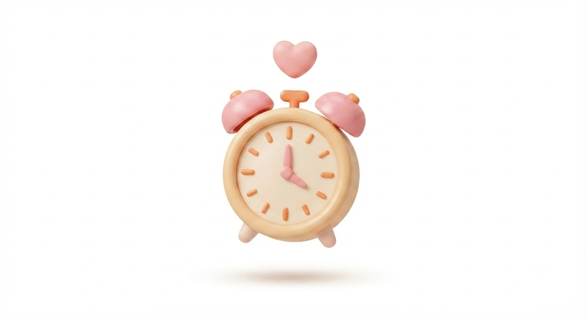
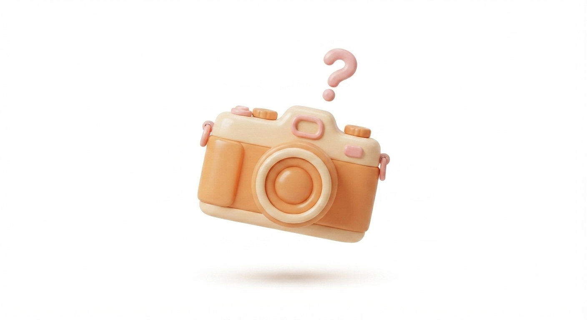
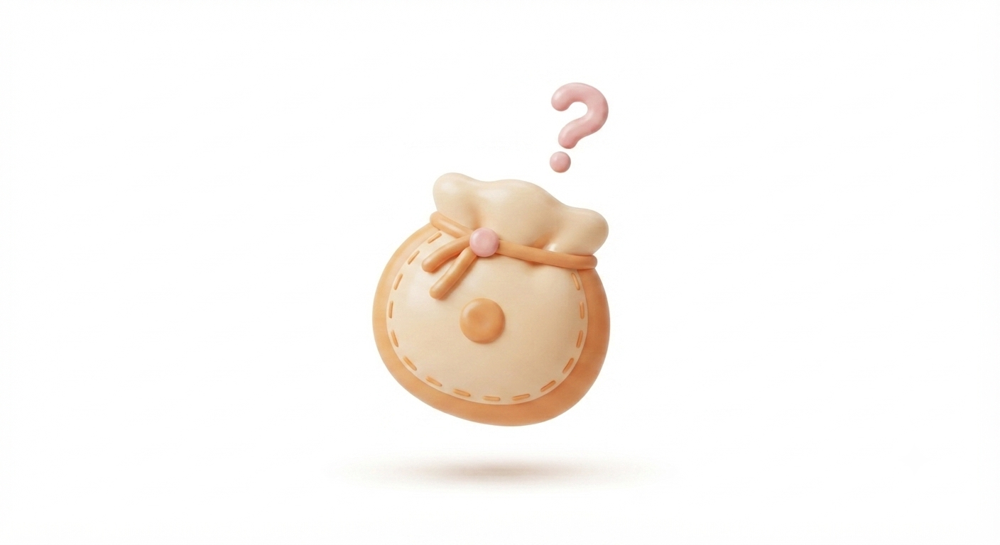
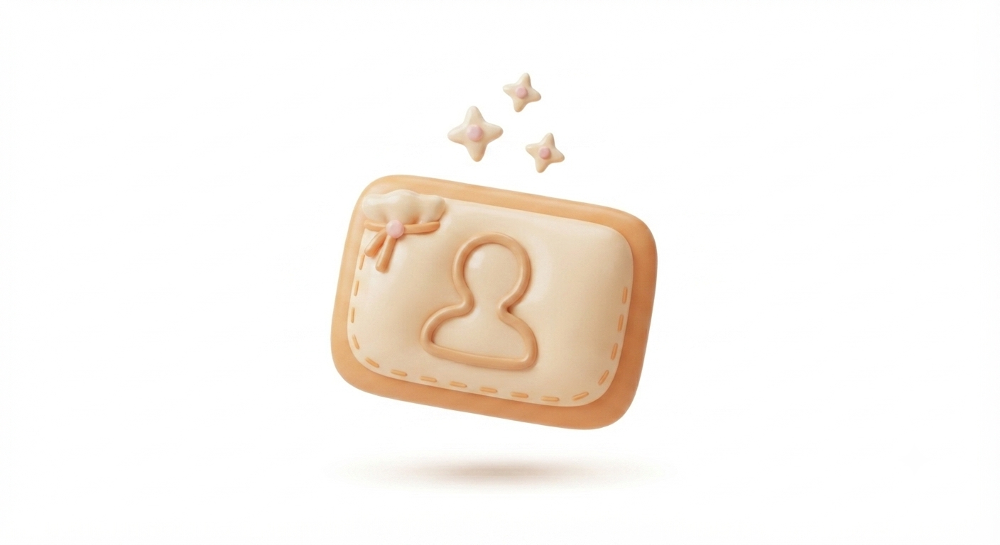
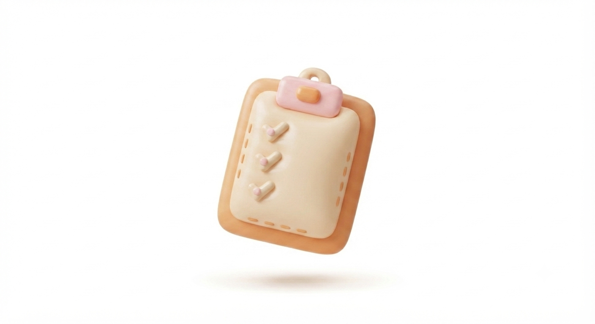
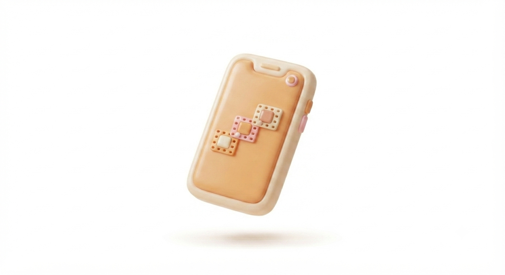
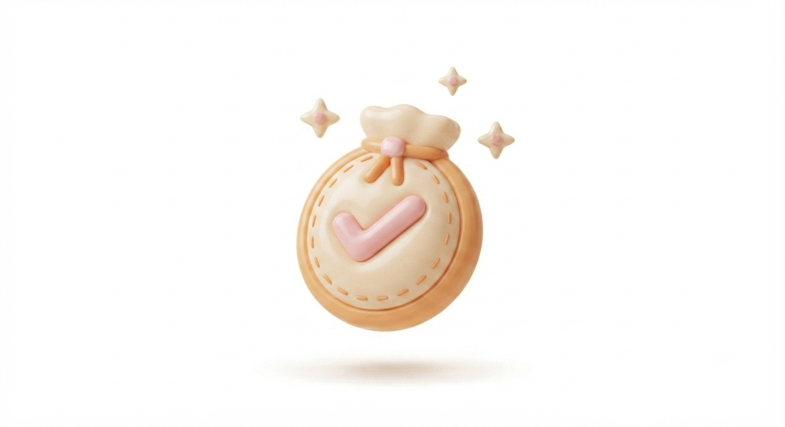

외식업 12년, 전국 30호점을 만든 사람이 직접 가르치는
맛집 크리에이터 입문 과정
맛있으면 간다 — 맛집으로 크리에이터 되기
폰 하나면 다 됩니다.
어려운 장비도, 복잡한 편집도 필요 없어요.
저도 그렇게 시작했어요 😊
이런 고민, 있으시죠?

아이 재우고 나서, 주말에 짬날 때 — 직장·육아랑 병행 가능한 부업이 있을까 고민되시죠? (아이 있는 주부님들도 많이 시작하는 이유가 이거예요)

매장 가서 뭐부터 찍어야 할지, 어떤 구도가 맛있어 보이는지 — 막상 가면 머리가 하얘지는 게 당연해요.

이런 의심, 당연해요. 오히려 안 하시는 게 이상해요.
RESULT
나만의 캐릭터·브랜딩으로 수익화 채널을 만들어요

매장 가기 전에, 대본·콘티·기획이 전부 끝나있어요 (촬영만 하면 됨)

캡컷으로 언제 어디서든 바로 편집해요

수료 즉시 맛집감별사에 신규 크리에이터로 바로 등록되고, 매칭되면 곧바로 광고가 진행돼요


맛집감별사 대표
이론이 아니라, 직접 부딪혀서 만든 노하우를 그대로 전달합니다. 한식명장 장지녕 간장게장(한남동 최고 맛집) 매장도 함께 만들어왔어요.
WHY NOW
맛집감별사 홈페이지가 막 문을 열었습니다. 지금 수료하시면, 신규 크리에이터 무료 매칭 프로그램에 가장 먼저 들어갈 수 있어요.
남은 자리 6석 · 상태 모집중
약 70만 개 매장에 비해, 맛집 전문으로 활동하는 크리에이터는 아직 상대적으로 적어요 — 지금 시작해도 늦지 않습니다.
PROOF
패션·생활용품은 경기를 타지만 식비 지출은 오히려 계속 늘고 있어요. 작년 엥겔지수가 31년 만에 최고치를 찍었을 정도로, 사람들은 여전히 "오늘 뭐 맛있는 거 먹지"를 고민해요.
CURRICULUM
캐릭터·콘셉트 잡기, AI로 브랜딩하기, 계정 세팅까지 — 나만의 채널의 첫 단추를 끼웁니다.
클로드(AI)로 카테고리별 반응 좋은 영상을 분석해, 매장에 가기 전에 대본·콘티·체크리스트까지 끝냅니다.
스마트폰 하나로 어디서든 편집을 끝내는 법을 익혀요.
대구에서 직접 만나 실제 매장을 방문하고, 촬영·편집까지 현장에서 완성합니다.
4회차가 끝나면, 이 채널은 온전히 당신의 것입니다.
APPLY
FAQ
네, 스마트폰 하나면 충분해요. 저도 그렇게 시작했어요.
오히려 이 과정은 초보를 위해 만들었어요.
줌 강의라 언제 어디서든 참여 가능하고, 아이 재우고 나서·주말에 참여하시는 분들도 많아요.
네, 수료 즉시 맛집감별사에 신규 크리에이터로 등록되고, 매칭되면 바로 광고가 진행돼요.
아니요, 얼굴 노출 없이 운영하는 방법도 함께 알려드려요.
1회차 시작 전까지는 전액 환불 가능해요.
소수 그룹으로 함께하며 서로 피드백도 나눠요.
4회차 실습은 미리 섭외된 매장에서 진행하니 걱정 안 하셔도 돼요.
네, 1개월간 단톡방 피드백이 포함되어 있어요.